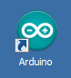

1. Introducción a Ardublock¶
Ardublock es una herramienta para Arduino que permite programar con bloques gráficos. Está orientado a facilitar la programación a los usuarios sin experiencia previa, simplificando mucho la tarea de realizar programas con un sencillo entorno gráfico.

Es una herramienta del entorno de programación de Arduino y no puede funcionar separado de él.
La versión que se suministra en esta página web es una versión modificada de Ardublock original, en la que se han simplificado los colores, los menús y el número de bloques con el objetivo de que sea más sencillo de utilizar.
Instalación de Ardublock¶
Para instalar la última versión de Ardublock-Picuino hay que seguir los siguentes pasos:
Descargar la
herramienta Ardublock-PicuinoCopiar el archivo en el directorio de Arduino. El directorio se puede encontrar en el entorno de Arduino, pulsando el menú:
Archivo... Preferencias... Localización del proyecto.Descomprir el archivo en el directorio de Arduino.
Cerrar y volver a abrir el entorno de Arduino. La nueva herramienta debe aparecer en el menú:
Herramientas... Ardublock
Instalación de librerías auxiliares para Arduino¶
Estas librerías permiten que la placa Arduino controle periféricos tales como un un panel visualizador LCD o emisores y receptores infrarrojos.
Para instalar todas las librerías a la vez, hay que seguir los siguientes pasos:
Descargar el
archivo con las librerías para ArduinoCopiar el archivo en el directorio de Arduino. El directorio se puede encontrar en el entorno de Arduino, pulsando el menú:
Archivo... Preferencias... Localización del proyecto.Descomprir el archivo en el directorio de Arduino.
Cerrar y volver a abrir el entorno de Arduino. Las nuevas librerías deben aparecer en el menú:
Programa... Incluir librería...
Para instalar librerías individuales utilizando el entorno Arduino, se puede leer el siguiente enlace sobre cómo añadir una librería al entorno Arduino.
Manejo básico de Ardublock¶
Abrir el entorno de Arduino: para abrir ardublock es necesario primero tener abierto el entorno Arduino, pulsando en el siguiente icono.
Conectar el puerto correcto: en el menú de herramientas... puerto... hay que seleccionar el puerto al que esté conectada la placa Arduino. Para más información ver solución de problemas con Arduino
Abrir Ardublock: en el menú de herramientas del entorno de Arduino aparecerá la palabra Ardublock. Pulsando sobre ella, aparecerá el entorno sin ningún programa.
Realizar el programa: desplazando los bloques desde los menús de la izquierda hasta conectarlos con el bloque de programa.
Duplicar bloques: pulsando sobre un bloque con el botón derecho del ratón, aparece la opción de 'Clonar' que duplica el bloque y todos los bloques que cuelgan por debajo.
Añadir comentarios: pulsando sobre un bloque con el botón derecho del ratón, aparece la opción 'Añadir comentario' que permite escribir un texto que explique la función del bloque. El comentario se puede ocultar o mostrar pulsando el icono de interrogación '?' a la izquierda del bloque.
Organizar los bloques: pulsando sobre una zona vacía con el botón derecho del ratón, aparece la opción de 'Organizar todos los bloques'. pulsándola, todos los bloques se organizan de forma ordenada.
Borrar bloques no deseados: desplazando los bloques hacia la izquierda en la zona de los menús, los bloques desaparecerán.
Cargar el programa a Arduino: pinchando el botón superior 'Cargar a Arduino' los bloques se transformarán en código que se cargará en la placa Arduino que esté conectada. Si es el primer programa que se carga, el entorno pedirá confirmación para guardar el programa. Hay que responder 'guardar'.
Este proceso no es inmediato, hay que esperar unos segundos hasta que termina.
Guardar el programa de Ardublock: Pulsando el botón superior 'Guardar como' aparecerá un cuadro en el que escribir el nombre del programa y su localización.